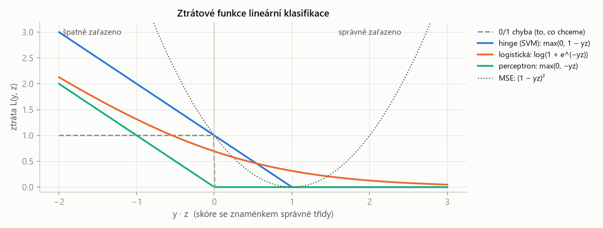
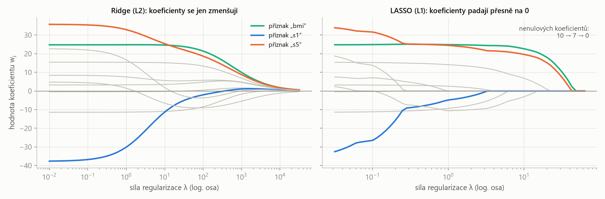
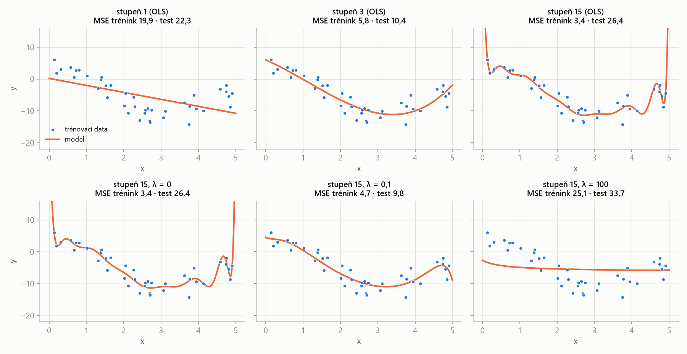
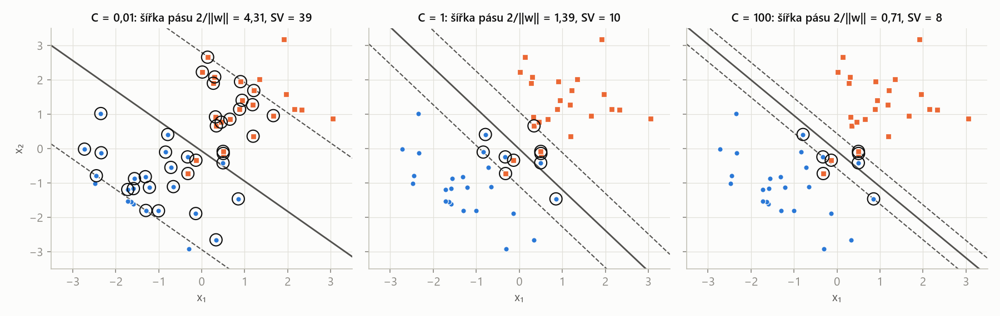
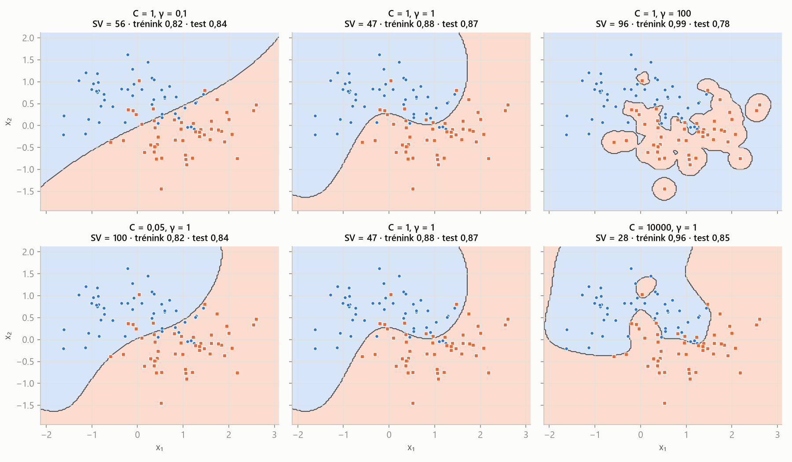

MLR – příprava na zkoušku · Lineární modely, jádra a SVM – MLR · https://balnerm.github.io/pripravy/mlr/04_linearni.html
Přednáška 4
Lineární modely, jádra a SVM
Jeden skalární součin vah a příznaků umí předpovědět číslo (regrese) i třídu (klasifikace). Všechno ostatní – OLS, LAD, ridge, LASSO, logistická regrese, perceptron, SVM – je jen volba ztrátové funkce a regularizace. Kapitola navíc ukazuje, jak lineární model naučit nelineární závislosti: polynomiálním rozšířením příznaků a jádrovým trikem v duální formě.
Jedna rovnice, dvě úlohy
Lineární model předpovídá pomocí skalárního součinu vektoru vah a vektoru příznaků: \(g(\mathbf x) = \mathbf w^\top\mathbf x + b = w_1x_1 + \dots + w_dx_d + b\). V regresi je predikcí přímo \(\hat y = \mathbf w^\top\mathbf x + b \in \mathbb R\), v binární klasifikaci jeho znaménko \(\hat y = \operatorname{sign}(\mathbf w^\top\mathbf x + b) \in \{-1, +1\}\).
každý příznak dostane váhu (důležitost a směr vlivu), výsledky se sečtou. Regrese se ptá „kolik“, klasifikace „na které straně nadroviny“.
Bias trick zapíše afinní funkci \(f(\mathbf x) = \mathbf w^\top\mathbf x + b\) jako čistě lineární tím, že k vektoru příznaků přidá konstantní složku 1 a k vahám posun \(b\): \(\tilde{\mathbf x} = (\mathbf x, 1)\), \(\tilde{\mathbf w} = (\mathbf w, b)\) ⇒ \(f(\mathbf x) = \tilde{\mathbf w}^\top\tilde{\mathbf x}\).
posun přestane být zvláštní parametr – je to jen další váha u příznaku, který má vždy hodnotu 1. Vzorce i kód jsou pak jednodušší (v datové matici \(X\) přibude sloupec jedniček).
Rozhodovací hranice lineárního klasifikátoru je množina bodů, kde \(\mathbf w^\top\mathbf x + b = 0\) – v 1D bod (práh), ve 2D přímka, obecně nadrovina. Vektor \(\mathbf w\) je na ni kolmý.
čára, která dělí prostor na „plus“ a „minus“ stranu.
| \(L(y, z)\) | ztrátová funkce – jak moc trestáme predikci \(z = \mathbf w^\top\mathbf x\) při skutečnosti \(y\) |
| \(\Omega(\mathbf w)\) | regularizace: \(\|\mathbf w\|_2^2\) (ridge, L2) nebo \(\|\mathbf w\|_1\) (LASSO, L1) |
| \(\lambda \ge 0\) | váha regularizace – kompromis mezi přizpůsobením datům a „jednoduchostí“ vah |
| úloha | model / ztráta | \(L(y, z)\) | vlastnosti |
|---|---|---|---|
| regrese | OLS – MSE | \((y - z)^2\) | hladká, uzavřený tvar, citlivá na odlehlé hodnoty |
| LAD – MAE | \(|y - z|\) | robustní k odlehlým hodnotám, řeší se LP / IRLS (bez uzavřeného tvaru) | |
| klasifikace \(y\in\{-1,+1\}\) | SVM – hinge | \(\max(0, 1 - yz)\) | maximální okraj |
| perceptron | \(\max(0, -yz)\) | trestá jen špatně zařazené | |
| logistická regrese – log-loss | \(\log(1 + e^{-yz})\) | pravděpodobnostní výstup | |
| LDA | Fisherovo kritérium | viz 3. kapitola |

Skutečnou chybu (0/1) nejde optimalizovat gradientem, proto ji nahrazujeme hladkými nebo konvexními náhražkami. Hinge je nulová, až když je bod správně a s rezervou (\(yz \ge 1\)) – odtud okraj SVM. Perceptron se spokojí se správnou stranou (\(yz \gt 0\)). Logistická ztráta nikdy není přesně nulová, jen klesá. MSE trestá i body, které jsou „až moc správně“ (\(yz \gt 1\)) – proto je MSE klasifikátor citlivý na odlehlé hodnoty a funguje špatně.
Lineární regrese
Model \(y = wx + b\), body (1, 2) a (3, 5). Maticově \(\mathbf y = X\tilde{\mathbf w}\) s \(X = \begin{pmatrix}1 & 1\\ 1 & 3\end{pmatrix}\) (sloupec jedniček + \(x\)), \(\det X = 2\) ⇒ \(\tilde{\mathbf w} = X^{-1}\mathbf y = \frac12\begin{pmatrix}3\cdot2 - 5\\ -2 + 5\end{pmatrix} = \begin{pmatrix}0{,}5\\ 1{,}5\end{pmatrix}\), tj. \(b = 0{,}5\), \(w = 1{,}5\). Pro dva body přímka projde přesně oběma; pro víc bodů to obecně nejde – musíme \(\mathbf y\) a \(X\tilde{\mathbf w}\) udělat „co nejpodobnější“.
Ordinary least squares je lineární regrese, která volí váhy minimalizující součet čtverců reziduí: \(\min_{\mathbf w}\sum_i(\mathbf x_i^\top\mathbf w - y_i)^2 = \|X\mathbf w - \mathbf y\|_2^2\). Je to konvexní úloha bez omezení s uzavřeným řešením \(\mathbf w^\ast = (X^\top X)^{-1}X^\top\mathbf y = X^\dagger\mathbf y\) (\(X^\dagger\) je Moore–Penroseova pseudoinverze).
„prolož body přímkou (rovinou), od které mají v součtu nejmenší čtvercové svislé vzdálenosti“. Lze řešit i gradientním sestupem, ale vzorec je k dispozici.
| \(X \in \mathbb R^{n\times d}\) | datová matice (řádky vzorky, včetně sloupce jedniček) |
| \(\mathbf y \in \mathbb R^n\) | cílové hodnoty |
| \(X^\top X\) | matice \(d\times d\); kontrola tvarů: \(X^\top(X\mathbf w - \mathbf y)\) je \((d\times n)(n\times1) = d\times1\) – tvar \(\mathbf w\) |
V kódu se soustava řeší (np.linalg.solve), inverze se explicitně nepočítá.
Body (0, 1), (1, 2), (2, 2) – žádná přímka neprojde všemi. \(X^\top X = \begin{pmatrix}3 & 3\\ 3 & 5\end{pmatrix}\), \(X^\top\mathbf y = \begin{pmatrix}5\\ 6\end{pmatrix}\) ⇒ \(\tilde{\mathbf w} = \frac16\begin{pmatrix}5 & -3\\ -3 & 3\end{pmatrix}\begin{pmatrix}5\\6\end{pmatrix} = \begin{pmatrix}7/6\\ 1/2\end{pmatrix}\), tedy \(\hat y = \frac76 + \frac12x\). Rezidua \((-\frac16, \frac13, -\frac16)\), součet čtverců \(\frac16\) – nejmenší, jakého může přímka dosáhnout.
Ridge s \(\lambda = 1\) (penalizujeme jen sklon, posun se obvykle nepenalizuje): \(\tilde{\mathbf w} = \left(X^\top X + \begin{pmatrix}0 & 0\\ 0 & 1\end{pmatrix}\right)^{-1}X^\top\mathbf y = \frac19\begin{pmatrix}6 & -3\\ -3 & 3\end{pmatrix}\begin{pmatrix}5\\6\end{pmatrix} = \begin{pmatrix}4/3\\ 1/3\end{pmatrix}\). Sklon se zmenší z \(\frac12\) na \(\frac13\) a posun se přesune, aby přímka zůstala u dat. (Vlastní přepočet pro další \(\lambda\): 10 ⇒ sklon 0,083; 100 ⇒ 0,010 – přímka se blíží vodorovné na úrovni průměru \(\bar y = 5/3\).)
LAD (least absolute deviations) minimalizuje součet absolutních hodnot reziduí \(\|X\mathbf w - \mathbf y\|_1 = \sum_i|\mathbf x_i^\top\mathbf w - y_i|\). Nemá uzavřené řešení; řeší se optimalizací (lineární programování, IRLS).
L1 je méně citlivá na velké hodnoty – jedna obří chyba se nepočítá na druhou – takže LAD je robustní k odlehlým hodnotám. Naopak je citlivější na velmi malé chyby: kvadrát malé chyby je zanedbatelný (\(0{,}01^2 = 0{,}0001\)), absolutní hodnota ne.
Regularizace: ridge a LASSO
Ridge regrese minimalizuje \(\|X\mathbf w - \mathbf y\|_2^2 + \lambda\|\mathbf w\|_2^2\). Má uzavřené řešení \(\mathbf w^\ast = (X^\top X + \lambda I)^{-1}X^\top\mathbf y\).
k chybě přičteme pokutu za velké váhy. Koeficienty se plynule zmenšují k nule, ale žádný přesně nulový nebude – model si ponechá všechny příznaky. Přičtení \(\lambda I\) navíc zajistí, že matice jde vždy invertovat.
LASSO (least absolute shrinkage and selection operator) minimalizuje \(\|X\mathbf w - \mathbf y\|_2^2 + \lambda\|\mathbf w\|_1\). Nemá uzavřené řešení, řeší se konvexní optimalizací; některé koeficienty vycházejí přesně nulové.
pokuta za součet absolutních hodnot vah „vypíná“ nepotřebné příznaky – LASSO tak dělá výběr příznaků (embedded metoda) a je odolné vůči irelevantním příznakům. Čím větší \(\lambda\), tím méně vybraných příznaků. Stejnou regularizaci lze použít i u LAD a lineárních klasifikátorů.

Ridge všechny koeficienty plynule stahuje k nule, ale dokud \(\lambda\) není obrovské, žádný z nich nulový není. LASSO je „vypíná“ jeden po druhém – počet nenulových koeficientů klesá 10 → 7 → 0. Velké \(\lambda\) = jednodušší model (nakonec konstanta = průměr).
| parametr | co znamená | ↑ když ho zvětším | ↓ když ho zmenším |
|---|---|---|---|
\(\lambda\) (ridge; v sklearn alpha) | váha L2 penalizace velikosti vah | koeficienty se zmenšují k 0, model hladší, menší rozptyl, větší bias; při \(\lambda\to\infty\) konstantní predikce (podučení) | blíží se OLS: lepší fit trénovacích dat, ale přeučení u mnoha příznaků / vysokého stupně polynomu; nestabilní při korelovaných příznacích |
| \(\lambda\) (LASSO) | váha L1 penalizace | víc koeficientů přesně 0 = méně vybraných příznaků, jednodušší model | víc příznaků v modelu, při \(\lambda = 0\) OLS |
| ztráta MSE vs. MAE | čtverec vs. absolutní hodnota rezidua | MSE: hladká, uzavřený tvar, odlehlé hodnoty „přitáhnou“ přímku; MAE (LAD): robustní k odlehlým hodnotám, bez uzavřeného tvaru | |
\(\lambda\) se ladí na validaci / v CV na logaritmické mřížce (0,001; 0,01; …; 1000). Příznaky je nutné standardizovat – penalizace jinak trestá příznaky podle jejich jednotek.
Nelineární příznaky: polynomiální regrese
Polynomiální regrese stupně \(m\) modeluje \(y_i = \beta_0 + \beta_1x_i + \beta_2x_i^2 + \dots + \beta_mx_i^m\). Je to obyčejná lineární regrese na transformovaných příznacích (sloupce matice jsou \(1, x, x^2, \dots, x^m\)) – model je nelineární ve vstupu, ale lineární v parametrech.
neměníme model, měníme to, co do něj posíláme. Koeficienty se odhadují stejně jako u lineární regrese, jen \(X\) je transformovaná. Stejně jako u PCA lze rozšíření provést i implicitně jádrem – potřebujeme ale duální formu.

Podučení: stupeň 1 (přímka nezachytí tvar, trénovací i testová chyba vysoká, 19,9 / 22,3) a stupeň 15 s \(\lambda = 100\) (regularizace ho „zploštila“ téměř na konstantu, 25,1 / 33,7). Přeučení: stupeň 15 bez regularizace – nejnižší trénovací chyba (3,4), ale divoké kmity a velká testová chyba (26,4). Dobře: stupeň 3 (5,8 / 10,4) nebo stupeň 15 s malou regularizací \(\lambda = 0{,}1\) (4,7 / 9,8). Regularizace dovolí použít bohatý model a přitom ho zkrotit.
| parametr | co znamená | ↑ když ho zvětším | ↓ když ho zmenším |
|---|---|---|---|
| stupeň polynomu \(m\) | nejvyšší mocnina příznaku (složitost modelu) | pružnější křivka, trénovací chyba ↓; od jistého stupně kmity mezi body a na okrajích, testová chyba ↑ (přeučení); počet příznaků roste rychle (\(\binom{d+m}{m}\)) | jednodušší, hladší křivka; příliš nízký stupeň nezachytí tvar (podučení) |
| \(\lambda\) | regularizace koeficientů | zkrotí kmity, při přehnané hodnotě zploští model (podučení) | víc volnosti, při 0 čistý OLS |
oba hyperparametry spolu souvisí – vyšší stupeň snese víc regularizace. Ladí se společně v CV.
Jádra a duální forma
Polynomiální rozšíření rychle roste: monomů do stupně \(m\) v \(d\) proměnných je \(\binom{d+m}{m}\) – pro \(d = 2, m = 3\) je to 10, pro \(d = 10, m = 3\) už 286, pro \(d = 100, m = 3\) 176 851; RBF jádro odpovídá dokonce nekonečněrozměrnému \(\Phi\). Klíčová myšlenka: mnoho ML algoritmů má duální formu, ve které se data objevují jen ve skalárních součinech \(\Phi(\mathbf x_i)^\top\Phi(\mathbf x_j)\) – a ty umí jádro spočítat levně (viz 3. kapitola: \((\mathbf x_i^\top\mathbf x_j)^2\) pro \(\mathbf x_i = (1,2)\), \(\mathbf x_j = (3,1)\) dá \(5^2 = 25 = 9 + 4 + 12\)).
Jádrová funkce je funkce \(k: \mathbb R^d\times\mathbb R^d\to\mathbb R\), pro kterou existuje zobrazení \(\Phi\) do (možná vysokodimenzionálního) prostoru takové, že \(k(\mathbf x_i, \mathbf x_j) = \Phi(\mathbf x_i)^\top\Phi(\mathbf x_j)\). Jádrová matice \(K\) obsahuje hodnoty \(K_{ij} = k(\mathbf x_i, \mathbf x_j)\) pro všechny dvojice trénovacích vzorků a je pozitivně semidefinitní.
jádro je „míra podobnosti“, která se chová jako skalární součin v jiném prostoru. Jádrová funkce nahradí \(\mathbf x_i^\top\mathbf x_j\) a jádrová matice nahradí \(XX^\top\).
| \(p\) | stupeň polynomiálního jádra (vyšší = složitější model) |
| \(c\) | posun – \(c \gt 0\) přidá i monomy nižších stupňů |
| \(\sigma\), \(\gamma = 1/2\sigma^2\) | šířka RBF jádra (gaussovky) a její převrácená hodnota – jak rychle podobnost klesá se vzdáleností |
Primární forma hledá váhy \(\mathbf w = (X^\top X + \lambda I)^{-1}X^\top\mathbf y\) (matice \(d\times d\)); predikce \(\hat y = \mathbf x_{\text{new}}^\top\mathbf w\). Duální forma hledá koeficienty vzorků \(\boldsymbol\alpha = (XX^\top + \lambda I)^{-1}\mathbf y\) (matice \(n\times n\)), přičemž \(\mathbf w = X^\top\boldsymbol\alpha = \sum_i\alpha_i\mathbf x_i\); predikce \(\hat y = \sum_i\alpha_i\mathbf x_i^\top\mathbf x_{\text{new}}\).
váhy jsou lineární kombinací trénovacích vzorků. Primár řeší soustavu velikosti počtu příznaků, duál velikosti počtu vzorků – rychlejší je ta menší. Duál obsahuje data jen ve skalárních součinech, a proto jde „zjádrovat“.
Kernel ridge regression je duální ridge regrese, v níž jsou skalární součiny nahrazeny jádrem: \(\boldsymbol\alpha^\ast = (K + \lambda I)^{-1}\mathbf y\), predikce \(\hat y_{\text{new}} = \sum_i\alpha_i k(\mathbf x_i, \mathbf x_{\text{new}})\), pro víc vzorků \(\hat{\mathbf y}_{\text{new}} = K_{\text{new}}\boldsymbol\alpha\), \((K_{\text{new}})_{ij} = k(\mathbf x_{\text{new},i}, \mathbf x_j)\).
implicitní transformace příznaků dá stejný výsledek jako explicitní, ale výpočetní složitost nezávisí na dimenzi rozšířeného prostoru – jen na počtu vzorků.
Lineární klasifikace
Data jsou lineárně separabilní, pokud existuje přímka (obecně nadrovina), která bezchybně oddělí všechny pozitivní vzorky od všech negativních.
reálná data jsou zašuměná, překrývají se nebo mají chybné labely, takže přesná separabilita téměř nikdy neplatí. Je to teoretický pojem potřebný pro hard-margin SVM a pro konvergenci perceptronu.
LDA jako klasifikátor (opakování 3. kapitoly): \(\mathbf w = S_W^{-1}(\boldsymbol\mu_1 - \boldsymbol\mu_2)\) a práh \(t^\ast = \frac12(\boldsymbol\mu_1 + \boldsymbol\mu_2)^\top\mathbf w - \ln\frac{\pi_1}{\pi_2}\), kde \(\pi_c\) jsou apriorní pravděpodobnosti tříd. MSE klasifikátor: natrénuj regresi (MSE) na labelech \(\pm1\) a vezmi znaménko – jednoduchý, s uzavřeným tvarem, ale citlivý na odlehlé hodnoty a výkonově špatný (trestá i body „příliš správně“).
Logistická regrese je pravděpodobnostní lineární klasifikátor: \(p(y = 1\mid\mathbf x) = \sigma(z) = \frac{1}{1 + e^{-z}}\), \(z = \mathbf w^\top\mathbf x + b\); třídu 1 předpoví, když \(\sigma(z) \ge 0{,}5\) (ekvivalentně \(\hat y = \operatorname{sign}(z)\)). Trénuje se minimalizací křížové entropie (log-loss): \(L = -y\log\sigma(z) - (1 - y)\log(1 - \sigma(z))\) pro \(y \in \{0, 1\}\), resp. \(L = \log(1 + e^{-yz})\) pro \(y \in \{-1, +1\}\).
sigmoida „zmáčkne“ lineární skóre do intervalu (0, 1), takže výstup lze číst jako pravděpodobnost. Ztráta je konvexní (řeší se gradientním sestupem), méně citlivá na odlehlé hodnoty než MSE, lze přidat regularizaci a výstupy jsou kalibrované (pokud model odpovídá datům). Stejná ztráta se používá v hlubokém učení – lineární model se jen nahradí sítí.
Perceptron je lineární klasifikátor \(\hat y = \operatorname{sign}(\tilde{\mathbf w}^\top\tilde{\mathbf x})\) trénovaný iterativním pravidlem: pro každý vzorek, který je zařazen špatně (\(y_i\tilde{\mathbf w}^\top\tilde{\mathbf x}_i \le 0\)), posune váhy směrem k němu: \(\tilde{\mathbf w} \leftarrow \tilde{\mathbf w} + \eta\,y_i\tilde{\mathbf x}_i\). Odpovídá ztrátě \(\max(0, -y\tilde{\mathbf w}^\top\tilde{\mathbf x})\).
„když se spleteš, natoč hranici trochu k chybnému bodu“; násobení \(y = \pm1\) automaticky zvolí směr. Prokazatelně konverguje jen pro lineárně separabilní třídy – jinak cyklí donekonečna.
def train_perceptron(X, y, epochs):
n, d = X.shape
w = np.zeros(d)
for _ in range(epochs):
for i in range(n):
y_hat = X[i] @ w
if y[i] * y_hat <= 0:
w += y[i] * X[i]
return wKaždý update přičte \(y_i\mathbf x_i\) ⇒ váhy jsou vždy váženým součtem vzorků, \(\mathbf w = \sum_i\alpha_i\mathbf x_i\). To je přesně definice vah \(\alpha\) v duální formě – intuitivní „důkaz“, že duál existuje.
Support vector machines (SVM)
Pro separabilní data existuje nekonečně mnoho hranic s nulovou chybou. Kterou zvolit? SVM vybere tu s největším okrajem (margin) – s největší „bezpečnou zónou“ mezi hranicí a nejbližšími body obou tříd. Široký okraj znamená, že malý posun (šum) nového bodu jeho zařazení nezmění.
Okraj je vzdálenost rozhodovací nadroviny od nejbližších trénovacích bodů; vzdálenost bodu od nadroviny \((\mathbf w, b)\) je \(|\mathbf w^\top\mathbf x_i + b|/\|\mathbf w\|\). Při normalizaci \(y_i(\mathbf w^\top\mathbf x_i + b) \ge 1\) leží nejbližší body přesně ve vzdálenosti \(1/\|\mathbf w\|\) (šířka pásu je \(2/\|\mathbf w\|\)). Support vektory jsou trénovací body, které leží na okraji nebo uvnitř něj; jen ony určují \(\mathbf w\) a \(b\).
podmínka „≥ 1“ jen fixuje měřítko: místo \(\|\mathbf w\| = 1\) s proměnným okrajem zafixujeme okraj na 1 a necháme měnit velikost \(\mathbf w\). Maximalizovat \(1/\|\mathbf w\|\) je totéž co minimalizovat \(\frac12\|\mathbf w\|^2\). Kdybychom ostatní body smazali, dostaneme stejnou hranici.
Hard-margin SVM řeší úlohu \(\min_{\mathbf w, b}\frac12\|\mathbf w\|^2\) za podmínek \(y_i(\mathbf w^\top\mathbf x_i + b) \ge 1\) pro všechna \(i\). Duální úloha je konvexní kvadratický program \(\max_{\boldsymbol\alpha}\sum_i\alpha_i - \frac12\sum_{i,j}\alpha_i\alpha_jy_iy_j\mathbf x_i^\top\mathbf x_j\) s.t. \(\sum_i\alpha_iy_i = 0\), \(\boldsymbol\alpha \ge 0\); pak \(\mathbf w = \sum_i\alpha_iy_i\mathbf x_i\) a \(\hat y = \operatorname{sign}\left(\sum_{i\in SV}\alpha_iy_i\mathbf x_i^\top\mathbf x + b\right)\).
QP má účinné algoritmy se zaručeným globálním optimem. \(\alpha_i \gt 0\) právě u support vektorů (\(y_i(\mathbf w^\top\mathbf x_i + b) = 1\)); pro predikci stačí jen ony – je rychlá. Funguje jen pro separabilní data.
\(\mathbf x_1 = (1, 1)\), \(y_1 = +1\); \(\mathbf x_2 = (-1, -1)\), \(y_2 = -1\). Geometrie: hranice je osa úsečky \(x_1 + x_2 = 0\); každý bod je od ní ve vzdálenosti \(\sqrt2\) ⇒ okraj \(1/\|\mathbf w\| = \sqrt2\), \(\|\mathbf w\| = 1/\sqrt2\). Primár: \(\mathbf w = (\frac12, \frac12)\), \(b = 0\); kontrola \(y_i(\mathbf w^\top\mathbf x_i + b) = 1\) pro oba body; účelová funkce \(\frac12\|\mathbf w\|^2 = \frac14\). Duál: \(\mathbf x_1^\top\mathbf x_1 = \mathbf x_2^\top\mathbf x_2 = 2\), \(\mathbf x_1^\top\mathbf x_2 = -2\); podmínka \(\alpha_1y_1 + \alpha_2y_2 = 0\) dává \(\alpha_1 = \alpha_2 = \alpha\); účelová funkce \(\sum_i\alpha_i - \frac12\sum_{i,j}\alpha_i\alpha_jy_iy_j\mathbf x_i^\top\mathbf x_j = 2\alpha - \frac12\cdot2(2\alpha)^2 = 2\alpha - 4\alpha^2\) (všechny čtyři členy dvojité sumy jsou \(2\alpha^2\)), derivace \(2 - 8\alpha = 0\) ⇒ \(\alpha = \frac14\); \(\mathbf w = \frac14(1,1) + \frac14(1,1) = (\frac12, \frac12)\) ✓. Duální optimum \(2\cdot\frac14 - 4\cdot\frac1{16} = \frac14\) = primární optimum (silná dualita); oba body jsou support vektory.
Soft-margin SVM povolí porušení okraje pomocí slack proměnných \(\xi_i \ge 0\): \(\min_{\mathbf w, b, \boldsymbol\xi}\frac12\|\mathbf w\|^2 + C\sum_i\xi_i\) s.t. \(y_i(\mathbf w^\top\mathbf x_i + b) \ge 1 - \xi_i\). Po dosazení nejmenšího přípustného \(\xi_i = \max(0, 1 - y_i(\mathbf w^\top\mathbf x_i + b))\) dostaneme ekvivalentní úlohu bez omezení \(\min\frac12\|\mathbf w\|^2 + C\sum_i\max(0, 1 - y_i(\mathbf w^\top\mathbf x_i + b))\) – regularizace okraje + hinge ztráta.
body smějí do pásu i na špatnou stranu, ale každé porušení se platí. \(\xi_i = 0\): správně a s okrajem; \(0 \lt \xi_i \le 1\): správně, ale uvnitř pásu; \(\xi_i \gt 1\): špatně zařazený. Každý bod s \(\xi_i \gt 0\) je support vektor. Hinge ztrátu lze použít i u neuronových sítí.
Špatně zařazený bod se skóre \(y_i(\mathbf w^\top\mathbf x_i + b) = -0{,}5\) má \(\xi_i = 1 - (-0{,}5) = 1{,}5\); bod uvnitř pásu se skóre 0,6 má \(\xi_i = 0{,}4\); bod za okrajem (skóre ≥ 1) má 0. V obrázku z přednášky (50 bodů): 30 bodů s \(\xi = 0\), 13 uvnitř okraje, 7 špatně; 21 support vektorů, \(\sum\xi_i = 15{,}7\).

\(C\) je cena za porušení okraje. Malé \(C\) (0,01): porušení jsou levná ⇒ široký pás (4,31), skoro všechny body jsou support vektory (39), hranice je „průměrem“ mnoha bodů. Velké \(C\) (100): porušení jsou drahá ⇒ úzký pás (0,71), málo support vektorů (8), hranice se řídí několika body u sebe. (V přednášce: \(C\) od 0,01 do 30 – okraj 2,54 → 0,27, support vektorů 44 → 16.)
ν-SVM je alternativní parametrizace soft-margin SVM, která místo \(C \in [0, \infty)\) používá \(\nu \in (0, 1]\) s intuitivním významem: \(\nu\) je horní mez podílu chyb na okraji (trénovacích chyb) a dolní mez podílu support vektorů. Úloha: \(\min\frac12\|\mathbf w\|^2 - \nu\rho + \frac1n\sum_i\xi_i\) s.t. \(y_i(\mathbf w^\top\mathbf x_i + b) \ge \rho - \xi_i\), \(\xi_i \ge 0\).
\(\nu = 0{,}1\) zhruba říká „smí být nejvýš 10 % chyb na okraji a support vektorů bude aspoň 10 %“ – snáz se volí než abstraktní \(C\).
Jádrové SVM vznikne nahrazením skalárního součinu v duální úloze soft-margin SVM jádrem: \(\max_{\boldsymbol\alpha}\sum_i\alpha_i - \frac12\sum_{i,j}\alpha_i\alpha_jy_iy_jk(\mathbf x_i, \mathbf x_j)\) s.t. \(\sum_i\alpha_iy_i = 0\), \(0 \le \alpha_i \le C\); rozhodovací funkce \(f(\mathbf x) = \operatorname{sign}\left(\sum_{i\in SV}\alpha_iy_ik(\mathbf x_i, \mathbf x) + b\right)\).
nelineární hranice v původním prostoru, přitom optimalizační úloha zůstává stejně velká – závisí na \(n\), ne na dimenzi příznaků. Explicitní \(\mathbf w\) v původním prostoru neexistuje; \(\alpha_i\) (nenulové jen u support vektorů) říkají, jak moc který support vektor ovlivňuje hranici.

\(\gamma\) (inverzní šířka gaussovky) určuje dosah vlivu jednoho support vektoru. Malé \(\gamma\) (0,1): každý bod ovlivňuje široké okolí ⇒ hranice skoro přímka (podučení, test 0,84). Velké \(\gamma\) (100): vliv jen v těsném okolí bodu ⇒ „ostrůvky“ kolem jednotlivých bodů, trénink 0,99, test 0,78 (přeučení). \(C\): malé = hladká hranice s mnoha support vektory (100), velké (10 000) = hranice se ohýbá kvůli jednotlivým bodům. Oba parametry se ladí společně.
| parametr | co znamená | ↑ když ho zvětším | ↓ když ho zmenším |
|---|---|---|---|
| \(C\) | cena za porušení okraje (kompromis šířka okraje × trénovací chyby) | méně porušení, užší okraj, méně support vektorů, hranice se přizpůsobí jednotlivým bodům ⇒ riziko přeučení | širší okraj, víc tolerance k chybám, víc support vektorů, hladší hranice ⇒ riziko podučení |
| \(\nu\) (ν-SVM) | horní mez podílu chyb na okraji, dolní mez podílu SV | víc tolerovaných chyb, víc support vektorů (jako menší \(C\)) | méně chyb, méně SV (jako větší \(C\)) |
| jádro | lineární / polynomiální / RBF | lineární = přímka (rychlé, interpretovatelné váhy \(\mathbf w\)); polynomiální a RBF = nelineární hranice | |
| RBF \(\gamma = 1/2\sigma^2\) | inverzní šířka jádra – dosah vlivu jednoho bodu | složitější, „ostrůvkovitá“ hranice, víc SV, přeučení | hladší hranice, blíží se lineárnímu modelu, podučení |
| polynomiální stupeň \(p\) | stupeň polynomiálního jádra | složitější model (přeučení) | jednodušší model |
grid search na logaritmické mřížce (\(C\) a \(\gamma\) po řádech) v křížové validaci; příznaky standardizovat (jádro i okraj počítají vzdálenosti). Málo SV = řidší, jednodušší model; mnoho SV = složitější hranice, víc paměti.
Interpretace lineárního SVM: \(\mathbf w\) = váhy (důležitost) příznaků, \(1/\|\mathbf w\|\) = okraj (polovina šířky pásu \(2/\|\mathbf w\|\)), support vektory = body na okraji nebo uvnitř něj, jen ony určují \(\mathbf w, b\).
„Lineární model počítá \(\mathbf w^\top\mathbf x + b\); v regresi je to přímo predikce, v klasifikaci rozhoduje znaménko. Trénování je minimalizace průměrné ztráty plus regularizace: OLS s MSE má uzavřené řešení \((X^\top X)^{-1}X^\top\mathbf y\), LAD s MAE je robustní k odlehlým hodnotám, ridge přidá \(\lambda\|\mathbf w\|_2^2\) a koeficienty zmenšuje, LASSO \(\lambda\|\mathbf w\|_1\) a některé vynuluje. Nelinearitu dostanu rozšířením příznaků, např. polynomem – model zůstává lineární v parametrech; jádrovým trikem v duální formě bez explicitního rozšíření. Logistická regrese dává pravděpodobnosti přes sigmoidu a log-loss, perceptron koriguje chyby a konverguje jen pro separabilní data. SVM maximalizuje okraj \(1/\|\mathbf w\|\); soft margin povolí porušení s cenou \(C\), což je hinge ztráta. Velké \(C\) a velké \(\gamma\) u RBF vedou k přeučení, malé k podučení.“
Shrnutí
Lineární model \(\mathbf w^\top\mathbf x + b\) (s bias trickem \(\tilde{\mathbf w}^\top\tilde{\mathbf x}\)) slouží regresi i klasifikaci; rozdíl je jen ve ztrátě. OLS minimalizuje čtverce reziduí a má uzavřené řešení z normálních rovnic; LAD minimalizuje absolutní odchylky a je robustní. Ridge (L2) koeficienty zmenšuje a má uzavřené řešení \((X^\top X + \lambda I)^{-1}X^\top\mathbf y\), LASSO (L1) je vynuluje, a tím vybírá příznaky. Polynomiální regrese je lineární regrese na rozšířených příznacích; stupeň a \(\lambda\) určují podučení či přeučení. Duální forma vyjadřuje váhy jako kombinaci vzorků a obsahuje data jen ve skalárních součinech – ty nahradí jádro (lineární, polynomiální, RBF), což dává kernel ridge regresi a jádrové SVM. Mezi lineárními klasifikátory je MSE klasifikátor slabý, logistická regrese dává kalibrované pravděpodobnosti, perceptron konverguje jen pro separabilní data. SVM maximalizuje okraj; soft margin s parametrem \(C\) (nebo \(\nu\)) odpovídá hinge ztrátě s L2 regularizací; hranici určují jen support vektory.
Take-home messages
- Lineární modely se liší jen volbou ztráty (MSE, MAE, hinge, log-loss, perceptron) a regularizace (L2, L1).
- OLS: \(\mathbf w = (X^\top X)^{-1}X^\top\mathbf y\); ridge přidá \(\lambda I\).
- Ridge zmenšuje koeficienty, LASSO je nuluje (výběr příznaků); ↑λ = jednodušší model.
- Polynomiální regrese je lineární v parametrech; vysoký stupeň bez regularizace = přeučení.
- Jádrový trik: v duální formě nahradíme \(\mathbf x_i^\top\mathbf x_j\) jádrem \(k(\mathbf x_i, \mathbf x_j)\); složitost závisí na \(n\), ne na dimenzi.
- SVM = max. okraj \(1/\|\mathbf w\|\); hranici určují support vektory.
- ↑C a ↑γ = složitější hranice (přeučení); ↓C a ↓γ = hladší (podučení).
Otázky ke zkoušce
Vysvětlete bias trick a rozdíl mezi lineární regresí a lineární klasifikací.
Afinní \(f(\mathbf x) = \mathbf w^\top\mathbf x + b\) zapíšu jako lineární \(\tilde{\mathbf w}^\top\tilde{\mathbf x}\) s \(\tilde{\mathbf x} = (\mathbf x, 1)\), \(\tilde{\mathbf w} = (\mathbf w, b)\) – posun je jen další váha, vzorce a kód se zjednoduší (sloupec jedniček v \(X\)). Regrese vrací přímo \(\mathbf w^\top\mathbf x + b\) (spojitě), klasifikace jeho znaménko; rozhodovací hranice je nadrovina \(\mathbf w^\top\mathbf x + b = 0\).
Odvoďte uzavřené řešení OLS.
\(g(\mathbf w) = \|X\mathbf w - \mathbf y\|^2 = (X\mathbf w - \mathbf y)^\top(X\mathbf w - \mathbf y)\); gradient \(\nabla g = 2X^\top(X\mathbf w - \mathbf y)\); položím roven nule ⇒ normální rovnice \(X^\top X\mathbf w = X^\top\mathbf y\) ⇒ \(\mathbf w^\ast = (X^\top X)^{-1}X^\top\mathbf y = X^\dagger\mathbf y\). Úloha je konvexní, takže jde o globální minimum. Pro body (0,1), (1,2), (2,2): \(\hat y = 7/6 + x/2\).
Proč je MSE citlivá na odlehlé hodnoty a MAE ne? Kdy byste zvolili LAD?
MSE umocňuje rezidua – chyba 10 přispěje 100, takže jeden odlehlý bod „přitáhne“ přímku. MAE přispěje lineárně (10), velké chyby nepřevažují. Naopak malé chyby MSE téměř ignoruje (\(0{,}01^2\)). LAD volím, když data obsahují odlehlé hodnoty nebo chyby měření, které nechci, aby model sledoval (např. ojedinělé artefakty v signálu).
Porovnejte ridge a LASSO. Jak λ ovlivní bias a rozptyl?
Ridge: penalizace \(\lambda\|\mathbf w\|_2^2\), koeficienty plynule zmenšuje, žádný nevynuluje, má uzavřený tvar \((X^\top X + \lambda I)^{-1}X^\top\mathbf y\). LASSO: \(\lambda\|\mathbf w\|_1\), některé koeficienty přesně 0 (výběr příznaků), bez uzavřeného tvaru (konvexní optimalizace). Větší \(\lambda\) = jednodušší model, menší rozptyl, větší bias (až podučení – konstantní model); menší \(\lambda\) = blíž OLS, menší bias, větší rozptyl (přeučení).
Jak sestavíte polynomiální regresi a proč zůstává lineární? Jak spolu souvisí stupeň a regularizace?
Matici příznaků rozšířím o sloupce \(x^2, \dots, x^m\) a řeším obyčejnou lineární regresi – model je lineární v koeficientech \(\beta\), nelineární je jen ve vstupu. Vyšší stupeň zvyšuje složitost (přeučení – kmity mezi body), nízký nezachytí tvar (podučení). Regularizace dovolí vysoký stupeň zkrotit: stupeň 15 s \(\lambda = 0{,}1\) se chová podobně jako stupeň 3, s \(\lambda = 100\) se zploští na konstantu.
Vysvětlete jádrový trik a proč je duální forma výhodná při velké dimenzi.
Duální forma (ridge: \(\boldsymbol\alpha = (XX^\top + \lambda I)^{-1}\mathbf y\), SVM) obsahuje data jen ve skalárních součinech \(\mathbf x_i^\top\mathbf x_j\). Nahradím je jádrem \(k(\mathbf x_i, \mathbf x_j) = \Phi(\mathbf x_i)^\top\Phi(\mathbf x_j)\) a dostanu model v rozšířeném prostoru, aniž bych \(\Phi\) počítal. Složitost závisí na počtu vzorků \(n\) (matice \(n\times n\)), ne na dimenzi \(\Phi\) – ta může být obrovská (polynomy) nebo nekonečná (RBF).
Porovnejte logistickou regresi a MSE klasifikátor. Co dělá perceptron a kdy konverguje?
MSE klasifikátor regresuje labely ±1 – jednoduchý a s uzavřeným tvarem, ale trestá i správně zařazené vzdálené body, je citlivý na odlehlé hodnoty a funguje špatně. Logistická regrese modeluje \(p(y = 1\mid\mathbf x) = \sigma(\mathbf w^\top\mathbf x + b)\), minimalizuje konvexní křížovou entropii, je robustnější a dává kalibrované pravděpodobnosti. Perceptron při každé chybě přičte \(\eta y_i\mathbf x_i\) k vahám; konverguje jen pro lineárně separabilní třídy. Z jeho update plyne \(\mathbf w = \sum\alpha_i\mathbf x_i\) – duální forma.
Definujte okraj SVM. Proč maximalizace okraje vede na minimalizaci ½‖w‖²? Jaká je role C a slack proměnných?
Okraj = vzdálenost hranice od nejbližších bodů, \(|\mathbf w^\top\mathbf x + b|/\|\mathbf w\|\). Zafixujeme-li měřítko podmínkou \(y_i(\mathbf w^\top\mathbf x_i + b) \ge 1\), nejbližší body mají vzdálenost \(1/\|\mathbf w\|\); maximalizovat ji je totéž co minimalizovat \(\frac12\|\mathbf w\|^2\) (kvadratický program). Soft margin přidá \(\xi_i \ge 0\) (velikost porušení okraje: 0 správně, (0, 1] uvnitř pásu, > 1 špatně) a cenu \(C\sum\xi_i\) – ekvivalentně hinge ztráta. Velké \(C\) = úzký okraj, méně chyb, přeučení; malé \(C\) = široký okraj, víc tolerance.
Které hyperparametry ladíme u jádrového SVM a jak ovlivní hranici? Co znamená mnoho vs. málo support vektorů?
\(C\) (nebo \(\nu\)), typ jádra a jeho parametry: stupeň \(p\) polynomu (vyšší = složitější), \(\gamma = 1/2\sigma^2\) u RBF (vyšší = užší gaussovky, hranice obtáčí jednotlivé body, přeučení; nižší = hladší, až lineární). Ladí se společně grid searchem v CV. Málo SV = řídký, jednoduchý model s rychlou predikcí; mnoho SV = složitější hranice a větší paměťové nároky (nebo velmi malé \(C\)).